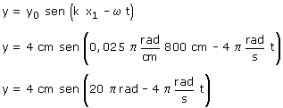

b) Si en una onda elástica se fija un valor para x, la ecuación de onda se convierte en la ecuación de posición del movimiento armónico del punto situado en dicha abscisa  Aunque parezca un tanto extraña, esta ecuación es la de un movimiento armónico (Puedes comprobarlo derivando para obtener la aceleración y comprobar que esta es proporcional y contraria a la posición)
|
||||